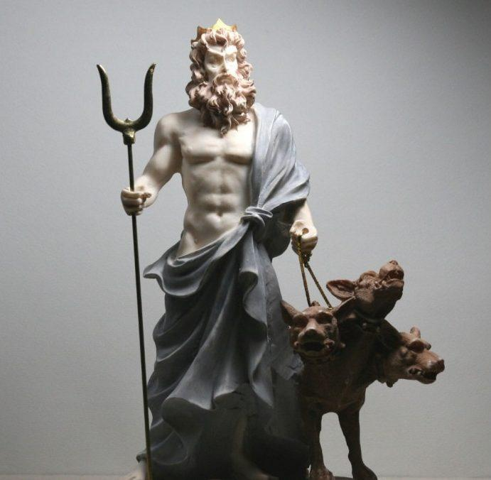
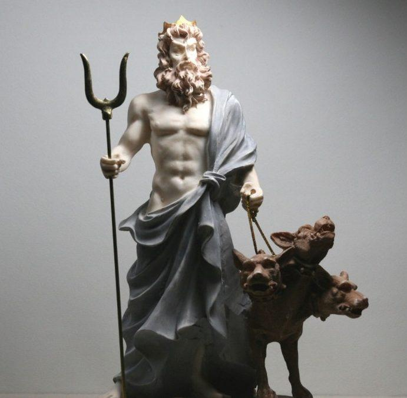

Hades
Introducción
Hades también llamado Plutón es el guardián de los infiernos, el señor del reino bajo tierra, el rey de los muertos. Es, en consecuencia, una de las divinidades más poderosas de todo el panteón clásico, cediendo sólo poder ante su hermano Zeus. Debido a su papel de señor de los muertos, Hades rara vez abandona los infiernos para visitar la tierra, por lo que pocas veces se mezcla en los asuntos de los mortales. Sólo en las contadas ocasiones en las que algunos héroes (Odiseo, Orfeo, Eneas), tomaron la decisión de descender al reino de los muertos en sus viajes, encontramos a Hades involucrado en las grandes sagas de la mitología griega.
 

Nacimiento
Hades es hijo de Crono y Rea. Crono, temeroso de correr la suerte que él mismo había dispensado a su propio progenitor, tomó la
decisión de ir devorando a todos sus hijos a medida que éstos iban naciendo, de modo que ninguno de ellos pudiera desafiarle y arrebatarle el poder una vez llegado a la edad
adulta. De este modo, el pequeño Hades fue engullido por el poderoso Cronos.

Sin embargo, Zeus, otro de los hijos de Crono y Rea, consiguió sobrevivir gracias a un engaño de
su madre, Rea, y al llegar a la edad adulta, desafió y derrotó a su padre, liberando a todos sus hermanos de las entrañas de Crono. De este modo, Hades quedó libre y se unió
a su hermano Zeus en su lucha contra los titanes para hacerse con el control del mundo, la guerra conocida como la Titanomaquia. El dios Hades poseía un arma única, forjada
por los cíclopes en las fraguas de las entrañas de la tierra: un casco de invisibilidad. Oculto gracias a los poderes de este artefacto, logró infligir grandes daños a sus
enemigos.Tras la victoria de Zeus, éste decidió repartir el universo con dos de sus hermanos. Eligió para sí mismo los cielos, mientras reservaba el gobierno de las aguas y
los océanos a Poseidón. A Hades le correspondió el mando sobre el mundo subterráneo, lugar al que se dirigían las almas de los mortales tras su muerte. De este modo, el dios
Hades se convirtió en el señor de los infiernos.
Algunos mitos
El rapto de Perséfone
Démeter se encontraba en un campo, recogiendo flores y jugando entre la hierba. Zeus la vio y quiso yacer con ella, así que la violó. De su unión nació Kore. Kore creció y se convirtió en una bella joven. Un día, Kore se encontraba recogiendo flores en compañía de sus amigas las sirenas, y en el momento en que va a tomar un lirio, la tierra se abre y por la grieta surge un carro tirado por caballos negros con Hades en él, y toma y se lleva a Kore. De esta manera, Kore cambió de nombre a Perséfone y se convirtió en la reina del Inframundo. Démeter castigó a las sirenas por no hacer nada por evitar que se raptasen a su hija, convirtiéndolas en criaturas mitad ave, mitad mujer. Démeter inició unos largos y tristes viajes en busca de su adorada hija, durante los cuales la tierra se volvió estéril.
Hades y Teseo
Otro de los mitos que los griegos contaban acerca del dios Hades estaba relacionado con las aventuras del héroe ateniense Teseo y
su descenso a los infiernos. Teseo y su compañero Pirítoo decidieron demostrar su valía raptando y desposando a dos hijas de Zeus. Mientras Teseo escogió a Helena, hija
de Zeus y Leda, Pirítoo escogió para si a Perséfone, hija de Zeus y Deméter según algunas versiones del mito. Teseo logró su objetivo: raptó a Helena mientras aún era una
niña y la dejó prisionera en su palacio de Atenas. Tras esto, decidió colaborar con su amigo Pirítoo en la consecución del objetivo. Los dos amigos descendieron juntos al
infierno para raptar a Perséfone.
Sin embargo, el dios de los muertos conocía sus intenciones de raptar a su esposa, por lo que, fingiendo que les ofrecía una cálida
acogida en su morada, les pidió que tomaran asiento en sendos tronos. En el momento en el que los dos héroes se sentaron, enormes serpientes surgieron del suelo y se
enroscaron en torno a los dos compañeros, aprisionándolos. Otras fuentes cuentan que el héroe quedó aprisionado al sentarse en una roca para descansar y no poder levantarse
de ésta, mientras Pirítoo era arrastrado a las profundidades del infierno por las Furias. Aunque Teseo fue posteriormente rescatado por Herácles en uno de sus doce trabajos,
Pirítoo quedó atrapado en los infiernos, condenado por toda la eternidad por la impiedad de haber ofendido a un dios tratando de raptar a su esposa.